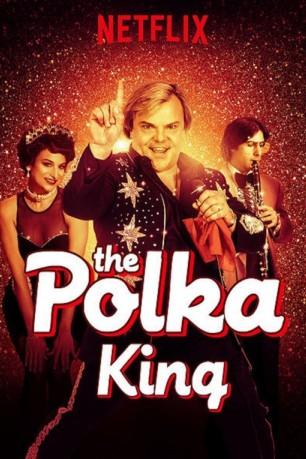

#8027 Der Polka König
 
 IMDB-Wertung: 5.9 / 10
IMDB-Wertung: 5.9 / 10  Metascore: 65
Metascore: 65 
Der Ladenbesitzer Jan Lewan beginnt in den 70er-Jahren seine Karriere als Polka-Sänger und schwingt sich schließlich zum unangefochtenen Polka-König von Pennsylvania auf. Doch dabei greift er auch zu unlauteren Mitteln und landet schlussendlich im Gefängnis...
Jahr: 2017
Dauer: 94 Minuten
FSK:
Land: USA Studio: NetflixTonspuren: DD5.1 - ,
Untertitel: Deutsch, Englisch,
Auflösung: 1080p (1920x1080) Größe: 3932 MB
Genre: Drama, Komödie, Biographie
Regisseur: Maya Forbes, Wallace Wolodarsky
Drehbuch: Maya Forbes
Soundtrack: Theodore Shapiro
Darsteller:
 Jack Black als Jan Lewan
Jack Black als Jan Lewan Jenny Slate als Marla Lewan
Jenny Slate als Marla Lewan Jason Schwartzman als Mickey Pizzazz
Jason Schwartzman als Mickey Pizzazz Jacki Weaver als Barb
Jacki Weaver als Barb J.B. Smoove als Ron Edwards
J.B. Smoove als Ron Edwards Robert Capron als David Lewan
Robert Capron als David Lewan Willie Garson als Lonny
Willie Garson als Lonny Vanessa Bayer als Bitsy Bear
Vanessa Bayer als Bitsy Bear Wallace Wolodarsky als Vince
Wallace Wolodarsky als Vince- Kati Salowsky als Connie Klopski
- Jordan Lloyd als Debra Johnson
- Rachel Annette Helson als Beauty Pageant Judge
- Melody Vasquez als Agent Ramirez
- Marilyn Busch als Sheila
- China Forbes als Grammy Reporter
 Jim Boyd als Reporter
Jim Boyd als Reporter- Portland Helmich als Anchorwoman
 Bruce-Robert Serafin als Customer
Bruce-Robert Serafin als Customer- Wendy Overly als Loud Lady
- Keith Mascoll als Applesauce
 Owen Burke als Prison Guard
Owen Burke als Prison Guard- Juani Feliz als PR Woman
 Brina als Dance Hall Patron (uncredited)
Brina als Dance Hall Patron (uncredited)- John J. Burke als Pageant Audience (uncredited)
- Joe Cali als Tourist (uncredited)
- Angel Connell als Performance Attendee (uncredited)
 Shawn Contois als Bus Driver (uncredited)
Shawn Contois als Bus Driver (uncredited)- Kevin Daigneault als Performance Attendee (uncredited)
 John Franchi als Performance Attendee (uncredited)
John Franchi als Performance Attendee (uncredited)- Suzanne Gillies als Security Agent (uncredited)
 Mickey Gilmore als Prison Guard (uncredited)
Mickey Gilmore als Prison Guard (uncredited)- Wendy Hartman als Wife Prison Visitor (uncredited)
- Tony Jones als Basketball Playing Prisoner (uncredited)
- Stephen Kyle als Telethon Operator (uncredited)
- Rob Lévesque als Jan Lewan Group (uncredited)
- Charles Majka als Onscreen Bass Player (uncredited)
- Robert Marsella als Waiter / Performance Attendee (uncredited)
 Dan Marshall als Polka Dancer (uncredited)
Dan Marshall als Polka Dancer (uncredited)- Bella Moore als Polka Kid (uncredited)
- Michele Mortensen als Polka Dancer (uncredited)
 Richard Pacheco als Performance Attendee / Polka Dancer (uncredited)
Richard Pacheco als Performance Attendee / Polka Dancer (uncredited)- Marybeth Paul als Pageant Contestant (uncredited)
- Kobi Polisky als Polka Child (uncredited)
 Americo Presciutti als Pope's Security (uncredited)
Americo Presciutti als Pope's Security (uncredited) Leah Procito als Nurse (uncredited)
Leah Procito als Nurse (uncredited)- Rich Rothbell als Uncle Rich / Polka Pro (uncredited)
- Harold Rudolph als Polka Dancer (uncredited)
- Mary Jane Brennan Sangiolo als Dance Hall Patron (uncredited)
- Brandon Scales als Prison Inmate (uncredited)
- Leonel Severino als Celebrity on the Red Carpet (uncredited)
Datei: X:\2017(N-Z)\Polka König, Der (2017, FSK, 1920x1080).mkv seit 16.01.2018
Festplatte: HD 2017(A-Z)-2018(A-F)
 Es gibt insgesamt 170 Filme in der Gruppe '2017(N-Z)'
Es gibt insgesamt 170 Filme in der Gruppe '2017(N-Z)'